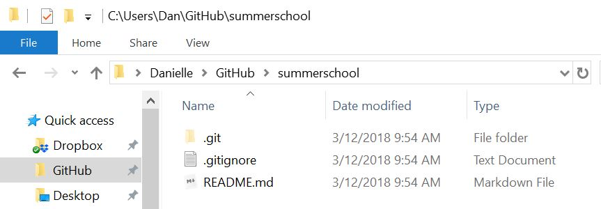

Version control with git
Slightly more fun than setting your laptop on fire
Danielle Navarro <i class="fab fa-twitter faa-float animated "></i> @djnavarro
11 December 2018
class: bg-main1 center middle hide-slide-number
.reveal-text.bg-main2[.pad1[ .font4Why learn git?]]
class: split-60 bg-main1
.column.bg-main1[.content.vmiddle.center[
Why learn git?
.pull.left[.pad1[ .font2[ - .orange[What?] Version control, collaboration, back up - .orange[Why?] Everyone has a laptop fire one day - .orange[How?] No-one really knows.]]]
]]
| .column.bg-main3[.content.vmiddle.center[ |
 |
| ]] |
class: split-60 bg-main1
.column.bg-main1[.content.vmiddle.center[
Structure of this section
.pull.left[.pad1[ .font2[ - This is interactive: don’t just listen, code! - Slide structure mirrors the tutorial - Goal is to build a repository that we’ll use later]]]
]]
.column.bg-main3[.content.vmiddle.center[
]]
class: bg-main1 center middle hide-slide-number
.reveal-text.bg-main2[.pad1[ .font4[Installing git]]]
class: split-two bg-main1
.column.bg-main1[.content.vmiddle.center[
How to install
.pull.left[.pad1[
Windows users:
https://gitforwindows.org/
### Mac users: ### Install Xcode from App Store (warning: 6Gb)
]]
]]
.column.bg-main3[.content.vmiddle.center[
]]
class: bg-main1 center middle hide-slide-number
.reveal-text.bg-main2[.pad1[ .font4[Configuring git]]]
class: bg-main1
.pad2[ .font3[Configuring git] .pull.left[.font2[ - Git (& later, GitHub) needs to know your name and email - Choose wisely! GitHub has educational discounts - From the Windows command prompt / Mac terminal:]
git config --global user.name 'Danielle Navarro'
git config --global user.email 'd.navarro@unsw.edu.au']]
.pad2[.pull.left[.font2[ - Other configurable things:]
git config --list]]
class: bg-main1 center middle hide-slide-number
.reveal-text.bg-main2[.pad1[ .font4Get a GitHub account]]
class: split-two bg-main1
.column.bg-main1[.content.vmiddle.center[
Get a GitHub account
.pull.left[.pad1[
GitHub will host repositories for you
Allows proper version control
Ideal for collaborative coding
]]
]]
.column.bg-main3[.content.vmiddle.center[
]]
class: bg-main1 center middle hide-slide-number
.reveal-text.bg-main2[.pad1[ .font4[Creating a repository on GitHub]]]
class: split-two bg-main1
.column.bg-main1[.content.vmiddle.center[
How to create a repo
.pull.left[.pad1[
Select new repository (The + in the top right)
Fill out details (See adjacent panel)
Celebrate! (See notes for extras)
]]
]]
.column.bg-main3[.content.vmiddle.center[

]]
class: bg-main1 center middle hide-slide-number
.reveal-text.bg-main2[.pad1[ .font4[Clone to your local machine]]]
class: split-two bg-main1
.row.bg-main1[.content.vmiddle.center[
At the Windows Command Prompt
.pull.left[.pad2[
cd C:\Users\Dan\GitHub
git clone https://github.com/djnavarro/summerschool.git]] ]]
–
.row.bg-main3[.content.vmiddle.center[
At the Mac OS Terminal
.pull.left[.pad2[
cd /Users/Dan/GitHub
git clone https://github.com/djnavarro/summerschool.git]] ]]
class: bg-main1 center middle
The result is a local copy of the repository

class: bg-main1 center middle hide-slide-number
.reveal-text.bg-main2[.pad1[ .font4[Learning about your repository]]]
class: split-70 bg-main1
.column.bg-main1[.content.vmiddle.center[
How do you feel?
.pull.left[.pad1[
git statusOn branch master
Your branch is up to date with 'origin/master'.
nothing to commit, working tree clean]] ]]
.column.bg-main3[.content.vmiddle.center[
]]
class: split-70 bg-main1
.column.bg-main1[.content.vmiddle.center[
Where is your home?
.pull.left[.pad1[
git remote --verboseorigin https://github.com/djnavarro/summerschool.git (fetch)
origin https://github.com/djnavarro/summerschool.git (push)]] ]]
.column.bg-main3[.content.vmiddle.center[
]]
class: bg-main1 center middle hide-slide-number
.reveal-text.bg-main2[.pad1[ .font4[Making local changes]]]
class: bg-main1 center middle
Let’s suppose we want to edit the README.md file

class: bg-main1 center middle
class: bg-main1 center middle

class: bg-main1 center middle hide-slide-number
.reveal-text.bg-main2[.pad1[ .font4[Making a local commit]]]
class: split-two bg-main1
.column.bg-main1[.content.vmiddle.center[
.pull.left[.pad1[
.font2[It’s a “simple” three-step process…] .font2[ - check the status - add (stage) the changes - commit the changes]
git status
git add --all
git commit -m "YOUR MESSAGE HERE".font2[… see tutorial for details] ]] ]]
| .column.bg-main3[.content.vmiddle.center[ |
 |
| ]] |
class: bg-main1 center middle hide-slide-number
.reveal-text.bg-main2[.pad1[ .font4[Pushing your commits to GitHub]]]
class: split-two bg-main1
.column.bg-main1[.content.vmiddle.center[
.pull.left[.pad1[
.font2[Pushing to GitHub actually is easy!]
git push -u origin master]] ]]
–
.column.bg-main3[.content.vmiddle.center[

]]
class: bg-main1 center middle hide-slide-number
.reveal-text.bg-main2[.pad1[ .font4[Adding collaborators]]]
class: bg-main1 center middle
To add a collaborator on GitHub

class: split-two bg-main1
.column.bg-main1[.content.vmiddle.center[
Collaborators can work on it too…
.pull.left[.font2[.pad1[ - Try it: invite someone and have them - Clone your repo - Commit some changes - Push up to GitHub]]] ]] – .column.bg-main3[.content.vmiddle.center[
How do you get their changes?
.pull.left[.pad1[.font2[
git pull]]] ]]
class: split-two bg-main1
.column.bg-main1[.content.vmiddle.center[
You can work simultaneously
.pull.left[.font2[.pad1[ - If you’re not editing the same thing - Make local commits whenever you like - Remember to pull before you push!]]] ]] – .column.bg-main3[.content.vmiddle.center[
But beware… of merge conflicts

]]
class: bg-main1 middle center